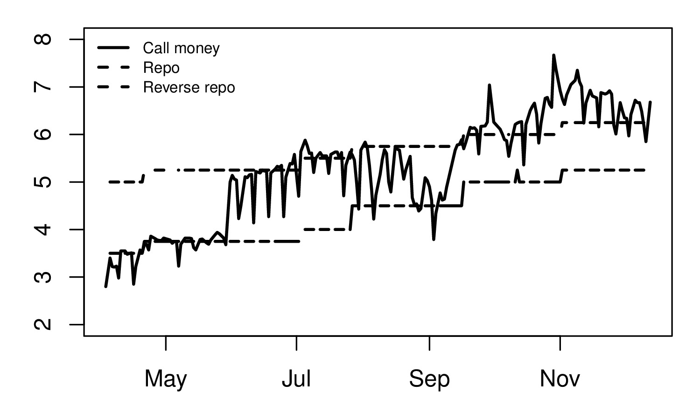
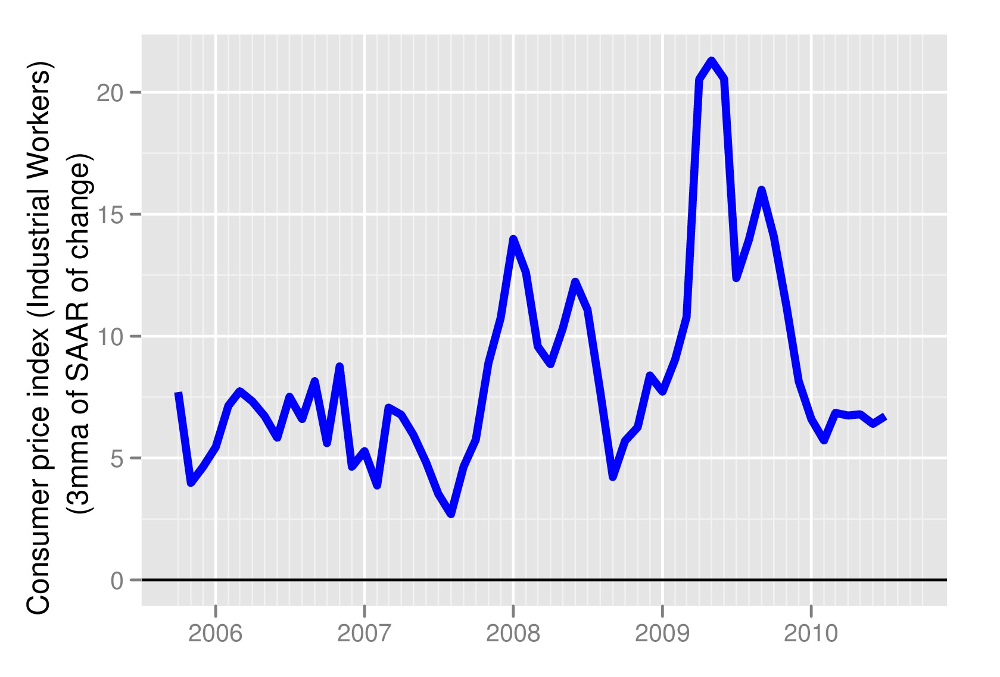

Going around in circles
Financial Express, 25 December 2010
Since mid-September money markets are facing tight liquidity conditions. In September this was said to be caused by advance tax payments. Last month the RBI governor suggested that the tightness was because the government not spending enough. Some observers have suggested that demand for cash has increased following for government programs like the NREGA which put money into the hands of poor people. Others blame the banking sector, claiming that since the banking sector has pulled back on its activities after the crisis, the money multiplier has contracted. Regardless of whether the government, banks, or households are to blame for the higher demand for liquidity, the fact remains that there is tightness in the system.
RBI credit policy review in December was made in a situation of tightness in money markets. As the figure shows, the call money rate has been above the interest rate corridor of the repo and reverse repo rates for 3 months now. The operating framework of monetary policy of the RBI has broken down, as raising or lowering rates is irrelevant from the point of view of making interest rates in the economy move.
In addition to tight liquidity, the economy is also witnessing high inflation and higher than expected growth. According to the RBI’s latest survey, households’ inflation expectations have continued to rise. Households expect inflation to rise from 12.1% currently to 12.3% in three months and to 12.7% in a year. The survey covers 4000 households across 12 cities and captures the inflation in the respondents’ consumption basket. While it can be argued that households are backward looking and these expectations may be too high, other indicators such as the survey of professional forecasters and the consensus forecast also show that that over the last few months inflationary expectations have risen.
To bring the call money rate back into the policy rate corridor RBI did not change the repo or the reverse repo rate and instead lowered the SLR and conducted open market operations. In other words, it gave a signal that it wanted to ease monetary conditions. The problem with this move was that it was the exact opposite of the signal the RBI needed to give to bring down inflationary expecations. The consequence of the RBI policy stance is that it signals that RBI is comfortable with the current inflation and growth.
An alternative policy move could have been to raise the repo and reverse rates pulling the corridor up. This would have given a signal that the current inflation rate is too high for RBI's comfort. Why was the RBI not able to take a clear anti-inflationary stance even when faced with high inflation, even higher inflationary expectations, and above expected growth? The problem lies in the lack of a clear framework and objective. In discussions about the aims and objectives of monetary policy, RBI has repeatedly made statements that inflation targeting is neither desirable nor practical for India. It has repeatedly misinterpreted inflation targeting, as a framework in which the central bank cares about nothing except inflation, in which growth and employment are irrelevant for choosing policy rates. Surely, given the academic literature on the importance of both output gap and inflationary expectations when a central bank targets inflation, this cannot be mere ignorance about what genuine inflation targeting means. Further, even if inflation is one of the goals of RBI, it would help to define what is the measure RBI is looking at and what is the level of inflation it is comfortable with.
In recent months the seasonally adjusted month on month inflation rate has been coming down. (Figure 2) However, the danger remains that higher food prices feed into higher wage prices (some evidence of which has been seen in recent months). One way in which this can be prevented is by anchoring inflationary expectations. A strong message needs to be given out that higher inflation will not be tolerated. In many countries in the world this has been successfully achieved by the central bank giving a large weight to inflation in its objective function. In India too RBI needs to give this signal. Unfortunately the lack of such a framework and clarity on it role leaves the RBI too confused in situations like the ones it faced this month, when it failed to take an anti inflationary stance.
Back up to Ila Patnaik's media page
Back up to Ila Patnaik's home page